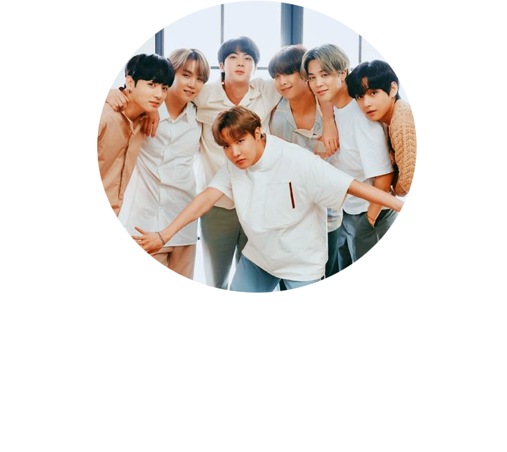

BTS, também conhecido como Bangtan Boys, é um grupo masculino sul-coreano formado em 2010. O grupo consiste em sete integrantes: Jin, Suga, J-Hope, RM, Jimin, V e Jungkook, os quais coescrevem e coproduzem grande parte do seu material. Originalmente um grupo de hip hop, eles expandiram seu estilo musical para incorporar uma ampla gama de gêneros, enquanto suas letras abordavam temas como saúde mental, os problemas da juventude escolar e a chegada da fase adulta, perdas, a jornada rumo ao amor-próprio, individualismo e as consequências da fama e do reconhecimento. Sua discografia e obras adjacentes também fazem referência à literatura, filosofia e psicologia, e incluem uma narrativa em universo alternativo.